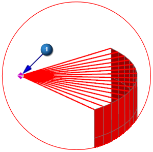
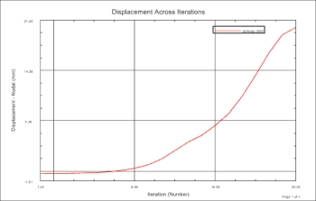

Graph the displacement across iterations
Create Graph (Post Processing group)
-
Graph Type
Across Iterations

-
Graph Title
Displacement Across Iterations
-
Y Axis
-
Method
Pick From Model

-
Pick
Single
-



-
OK
-
Create New Window

-
Close
(graphing window)
A node for the new graph appears in the Post-Processing Navigator.
-
LDC
Graphs
Strain Across Iterations
Displacement Across Iterations